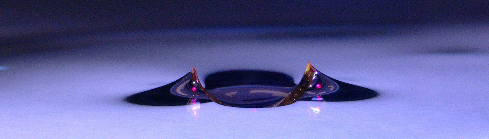
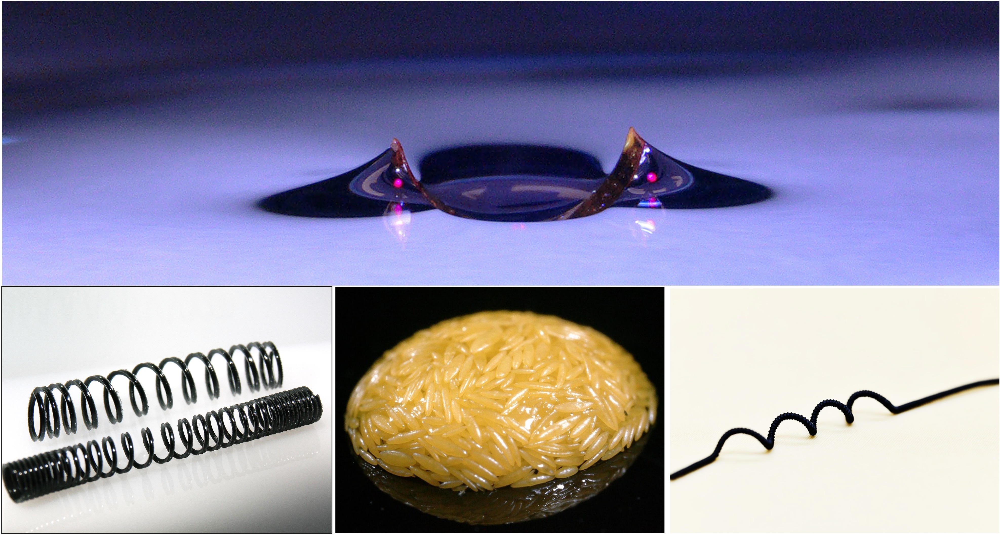
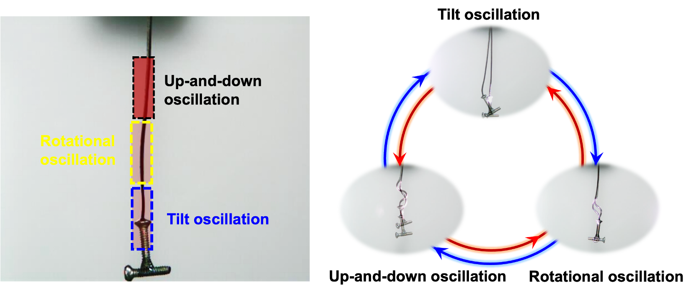
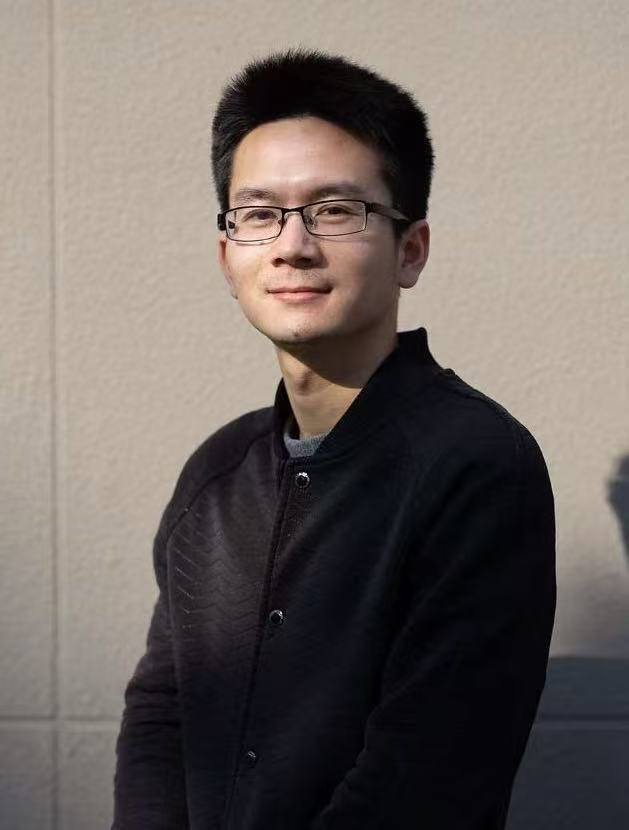
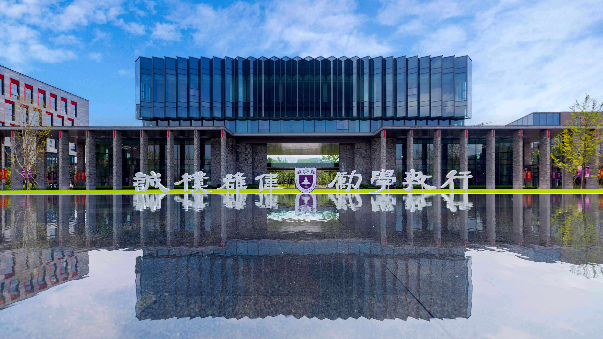
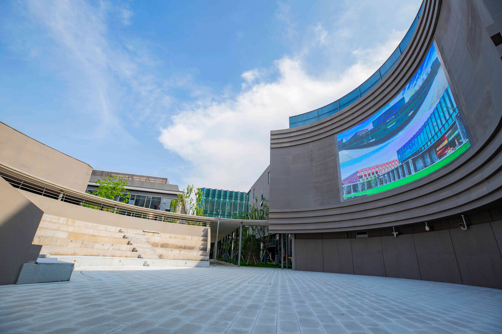
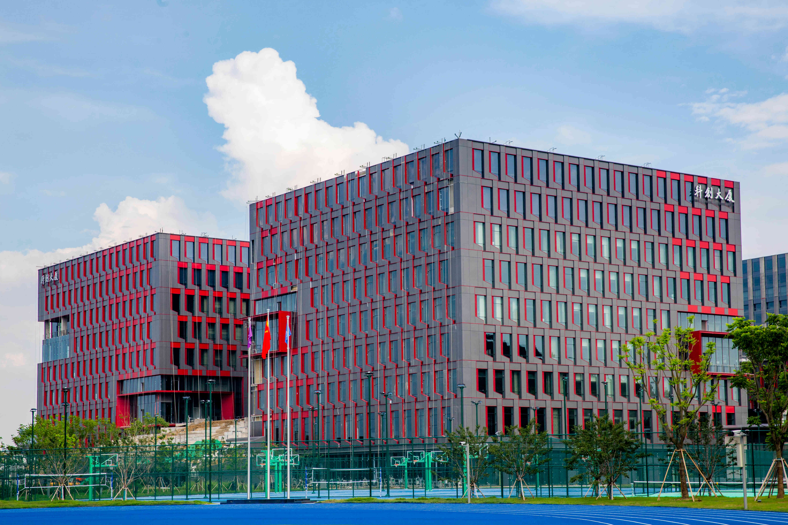
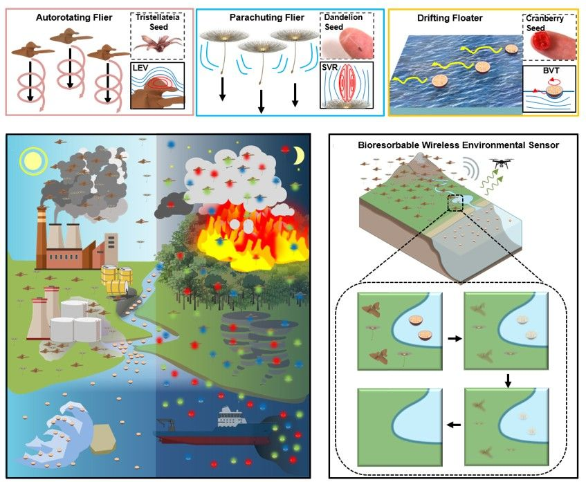
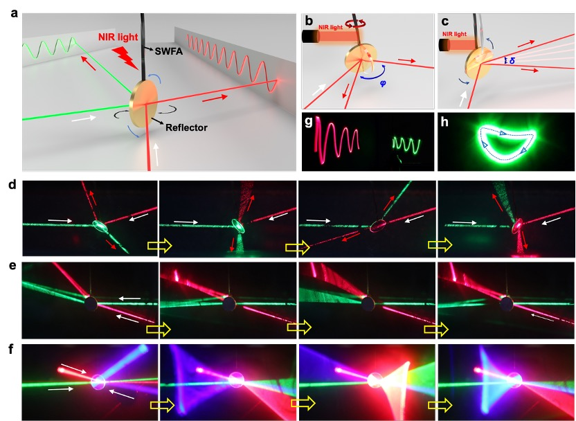

Programmable Assembly of Liquid Crystal Polymer Actuators

- Liquid-crystal polymer
- Optocapillarity
- Programmable assembly
Nature Communications, 2020, 11, 5780.
Nanjing University · Intelligent Materials
Exploring materials-level intelligence through programmable soft actuators, self-sensing systems, and bio-inspired environmental microdevices.
About
The SASM Lab focuses on materials-level intelligence, developing flexible smart materials and devices with integrated self-actuation, self-sensing, and environmental adaptability. Inspired by natural systems, we combine liquid-crystal polymer materials, soft-matter mechanics, and advanced fabrication strategies to create programmable, multimodal soft systems.
Our long-term vision is to establish scalable material platforms for soft robotics, bio-inspired actuation systems, and sustainable environmental and biological sensing, enabling intelligent materials to operate and adapt in complex real-world environments.
Research
We connect material design, mechanics, fabrication, and device engineering to create adaptive soft systems with programmable motion and sensing.
RESEARCH 01
We develop flexible photonic and light-responsive materials that enable programmable actuation and multimodal sensing, providing materials-level control for soft robotic and adaptive systems.

RESEARCH 02
Our research explores self-sustained oscillatory systems and bio-inspired helical soft actuators, revealing new mechanisms for autonomous motion, rhythmic actuation, and untethered soft machines.

RESEARCH 03
Our research focuses on bio-inspired, biodegradable distributed sensor platforms that transduce environmental signals into optical or mechanical responses, enabling large-area, low-impact environmental monitoring.

Videos
A collection of dynamic demonstrations showing how smart materials transform, oscillate, and interact with their surroundings.
VIDEO 01
Light-responsive soft materials create programmable plant-like motion.
VIDEO 02
Programmed fibers autonomously wind into functional three-dimensional forms.
VIDEO 03
Steady illumination generates sustained rhythmic motion without periodic control.
VIDEO 04
Optical conditions regulate the mode and dynamics of autonomous soft motion.
People
We are building an interdisciplinary team spanning smart polymers, soft matter, mechanics, advanced manufacturing, and sensing systems.

PRINCIPAL INVESTIGATOR
Lab Director · Assistant Professor
School of Advanced Manufacturing Engineering
Nanjing University
PhD Student · Joined 2026
Master Student · Joined 2026
Master Student · Joined 2026
Master Student · Joined 2026
Undergraduate Researcher · Joined 2026
OPEN POSITIONS
We welcome motivated students and researchers interested in smart materials, soft robotics, bio-inspired systems, and environmental sensing.
View 2026 Recruitment InformationLab life



Publications
Representative work in smart actuation, self-oscillating systems, and distributed sensors. More publications are available on Google Scholar.





News
Dr. Zhiming Hu joined the School of Advanced Manufacturing Engineering at Nanjing University and founded the Smart Actuation & Sensing Materials Lab.